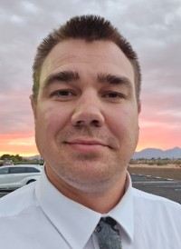

Michael Bowman | WDD 130
Hello, my name is Michael Bowman I am married with 3 kids. I am a Marine Corps veteran, shortly after leaving the military I started into the field of trucking and logistics. I have been a logistics coordinator for the last 8 years. I started to pursue a degree to further my knowledge on multiple fronts such as project management, software engineering, and web development. BYU Pathway had a professional studies degree that allowed me to have a broader scope of study which fit well with the things i wanted to learn. I am excited to participate in this course with all of you.